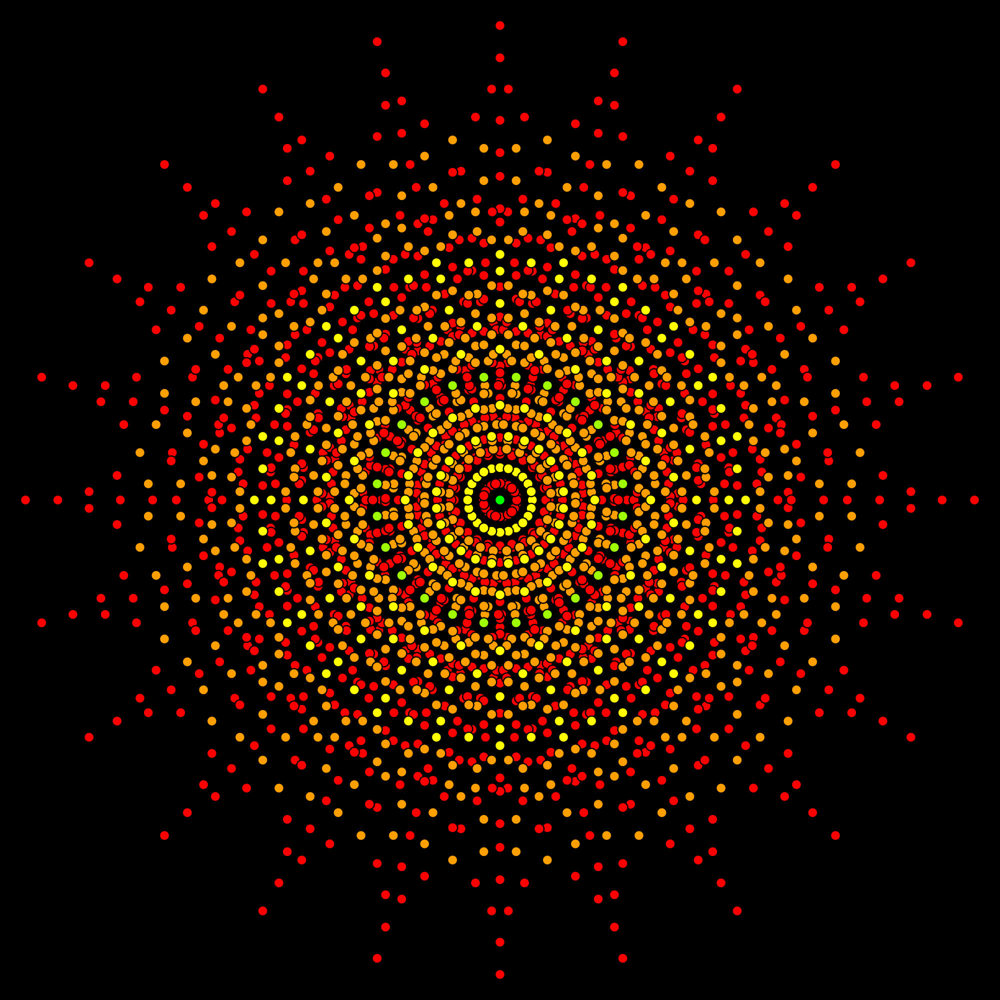

April 28th 2020, 7:27:30 pm EDT

Listen
At the center of our being,
we each have a collection.
It makes us unique,
but we never lose our connection.
As with all things in life,
it is too easy to get lost in strife.
We have to protect what makes us unique,
if you fail, your future will be bleak.
With all things we do,
sometimes the bad guys slip through.
This is what we need courage for,
to look them in the eyes, and slam the door.
The unique collection at our center, is our power.
It transforms, and evolves, hour after hour.
We start with just the Ocean, Skies, Mountains, Stars, Earth and Mars,
maybe Flowers, Gardens, Kittens, Dogs, Horses and Frogs.
But then it grows, call it soul, or spirit, personality or vitality,
it becomes... Beauty, Endurance, Authenticity, Nobility, Love and Dignity.
And it keeps growing, so as long as you Love Yourself,
It creates Leaders, Protectors, Guides, Teachers, Dreamers,
Adventurers, Explorers and Discoverers,
Intellectuals, Humanitarians, Philosophers,
Scientists, Astronomers,
Dancers, Athletes, Bodybuilders,
Chefs, Blacksmiths, and Makers,
Musicians, Poets, Sculptors, Photographers and Filmmakers,
Artists and Designers,
Hackers and Programmers,
Genius...
Visionaries...
Founders....
You have to protect what makes you unique at all cost,
if you start letting go, you will become lost.
And many will come, and many with care and kindness,
and they will try to change you, in their blindness.
You cannot grow up, if you start letting go,
you need an unbroken chain, you need that flow.
You have to learn to say,
that it's either you, the one one who stands and is true,
or you are through.
To grow up, into who you need to be,
is your right, and your dignity.
To let bullies push you around,
is to fail, and falter,
and run aground.
Decades, decades after they are long gone, do not let go,
do not take their turns, do not change your view,
you must aim to become worthy of you.
Whether you believe in Heroes,
on that we are only Human.
It is the same height,
just a maximum of our might.
Push, and stand up, and aim up, and rise,
Open your eyes,
it is the only way to become wise.
Fight for who you are,
because in time,
that fight is also for who you need to be.
For who you need to be,
to be strong and healthy,
and unbreakable and worthy.
April 27th 2020, 2:50:43 pm EDT
Listen
As I woke up this morn,
I knew my recreational programming schedule will be torn.
I put on my slippers, and I shuffled down stairs,
and begun slowly sorting through all my kitchen wares.
For today, is my Spring Cleaning day,
and I will have little time to play.
I wished and washed, and sloshed and swished,
in the end all my cleaning sponges looked squished.
To complete my mission, I had to update my fire alarms,
so I grabbed my ladder, and put tools under my arms.
My bendy scissors, and my rusty screwdriver
that looks like I stole it from a scuba diver.
And climbed, my three little steps,
all the while flexing my triceps.
When I finally made it to the top,
the little screw wouldn't fit, so I got down and poked it with my mop.
I said, "This a job for 'mah power-tools,
I need my drill, this ain't no job for fools."
I cannot describe to You with what amazing grace,
I made that hole, and fireproofed my place.
As I was making my way down,
I almost felt like I earned a crown.
But, when I reached the bottom, I found a screw,
I must have dropped it... it was brand new.
But! In the end I made it all work,
and muttered, "Guess, I am not such a dork."
Now, when I look up and tilt my head,
I can see it... slowly blinking red.
April 26th 2020, 7:10:06 pm EDT
Listen
Don't let them put you on a school bus.
Tell you parents, school is crazy!
And anyway,
they shouldn't be so lazy.
You will need all the games,
and you memorize no presidential names.
You demand a trip to every national park.
because you will not spend you life in the dark.
You will need every audio-book ever made,
and only then will you go through life unafraid.
April 26th 2020, 6:51:16 pm EDT
Listen
Did you know, that we can't grow,
unless our lessons connect together?
We learn the way we navigate cities.
If we leap from one city center, to another...
we will not know, where to go, or what to do.
None of the roads will make any sense.
To divide knowledge into subjects,
and encourage cramming, and memorization,
and force remembering over understanding.
That is not Education, or Knowledge.
We can no more leap between subjects,
than hobbies, or families.
What connects two things together,
is as important as the things themselves.
We only learn when two connect,
and, then the two connect to a third one,
and next one, to no end.
We need a pleasant memorable,
unbroken chain of curiosities,
that we can slide up and down, when need be.
Disconnected snippets,
that we not know what to do with,
are not useful to us.
April 26th 2020, 4:31:13 pm EDT
Listen
Think of a trickster, a real bad fool.
What a great robbery it would be.
If your parents sent you to college.
And teachers sold disconnected snippets.
And called it knowledge.
And wouldn't it be convenient,
if you could chose you next batch.
Wouldn't the trickster rejoice,
had you called, that, a choice.
And then at the end of the day.
When hard earned money was taken.
You wouldn't even be shaking,
even though it was worse than a break-in.
Think of a trickster, a real bad fool,
that took away your very own school.
The moral of this story,
is that you should think through,
when someone offers to teach you.
Education, requires that you learn on your own,
that something that teaching can only postpone.
April 25th 2020, 8:28:14 pm EDT
Listen
Captain's Log Supplemental, Quarantine, Day Forty.
We are born to run our fingers through infinity,
be it Wright Brothers or Yuri Gagarin, Galileo Galilei.
It is our right to touch the greatest of heights,
and it is our privilege to cheer for each other in triumph.
We have no flaws, no ugliness, no weakness, and no limit,
be it Tenzing and Hillary, or Viktor Emil Frankl.
Nothing can stop us,
there are no bars thick enough,
there are no bars strong enough,
"We are the Captains of our Souls,
And The Masters of Out Fate"
However, there is a culture that we must never let go of,
The culture of, Love of Wisdom,
The culture of, Inheritance of Knowledge.
If we are tricked to reject Wisdom,
and if there is no teacher or parent,
or friend left to remind us,
then all will be lost.
Your work will not set you free,
it is a lie as old as slavery.
Your teachers can only remind,
but they cannot reach into your mind.
Fight for your right to knowledge,
there is no university,
there is no college,
you have to use your heart to learn,
only you can do that.
Without Inheritance of Wisdom,
you will become cursed to start at zero.
As magnificent as your battle will be,
you will only reach a path, that was walked countless times before.
You must start,
where the greatest minds left off.
April 25th 2020, 5:23:19 pm EDT
Listen
Captain's Log, Quarantine, Day Forty.
Everything is all right, except for our flight.
But had we been given infinite light,
our wings would fail in flight.
What gives us the right to learn, and rise to height,
is the limit of the duration of our light.
What makes it precious, and worth the flight,
is precisely the limits in duration of our light.
It is by our limits that we look to light,
had we been given infinite flight,
our intelligence would fail to light.